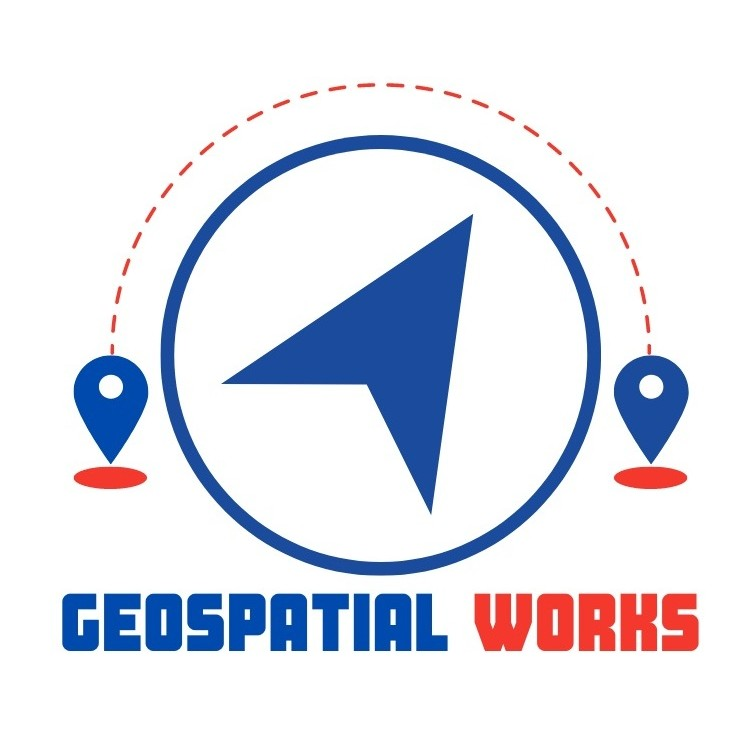

Geospatial WorksUAV & Photogrammetry Expert · April 2026–Present
WEB-AIS — Irrigation Water Management and Agricultural Information System
View role details
Lead UAV survey planning, photogrammetric data production and geospatial analysis for irrigation water management and agricultural information services.
Selected project
- Research Project on Irrigation Water Management and Web-based Agricultural Information System for Bangladesh (WEB-AIS)
Key responsibilities
- Plan and execute UAV survey missions, including flight planning, image acquisition and field coordination.
- Process aerial imagery to generate orthomosaics, digital surface and terrain models (DSMs/DTMs), and 3D point clouds.
- Carry out GNSS/RTK ground-control surveys and georeferencing to support positional accuracy.
- Manage GIS data, prepare geospatial databases and thematic maps.
- Apply remote sensing for agricultural monitoring, land-use analysis and vegetation assessment.
- Generate and analyze NDVI maps using multispectral UAV imagery.
- Extract field boundaries, irrigation infrastructure and physical features from orthomosaics.
- Validate spatial outputs and integrate UAV, GNSS/RTK, GIS and remote sensing datasets.